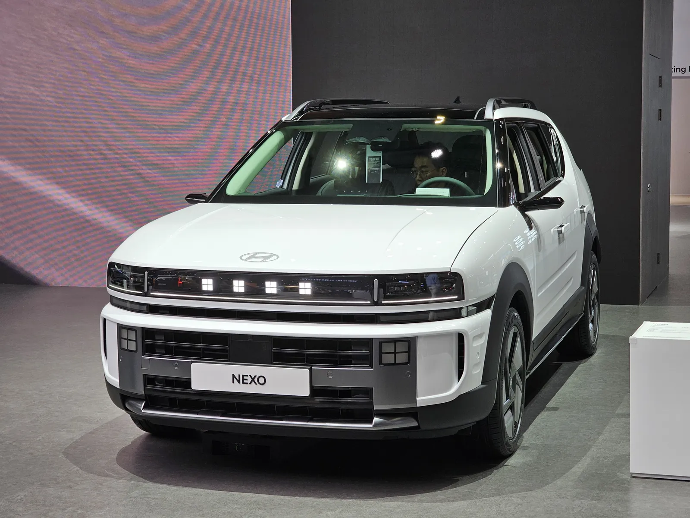
▲ 전시장 무대에 놓인 흰색 넥쏘 전측면. 파일 정보상 색상은 크리미 화이트 펄이며, 사진 속 차의 트림은 확정하지 않는다 ⓒ Damian B Oh, Wikimedia Commons (CC BY-SA 4.0)
"7,647만 원이 4,697만 원이 된다." 현대차 공식 가격표(2026년 10월 1일 기준)에서 넥쏘 모던의 세제혜택 후 판매가는 7,647만 원이다. 무공해차 통합누리집(ev.or.kr)의 수소차 보조금 목록에서 서울의 2세대 모델 행(디올뉴넥쏘)은 국비 2,250만 원에 지방비 700만 원, 소계 2,950만 원이다. 뺀 값이 4,697만 원이고, 같은 모던을 지방비 1,700만 원인 전남 보성군이나 제주에서 사면 3,697만 원까지 내려간다. 반대로 목록에 지방비가 0으로 적힌 경북 예천군·전북 무주군은 5,397만 원이다. 이 글은 2026년 10월 11일에 조회한 가격표와 보조금 목록, 올해 보조금 접수·출고 현황, 수소충전소와 충전 요금, 취득세·개별소비세 감면 규정을 한 번에 맞춰 본다.
수소 인프라 투자와 넥쏘의 수소차 점유율은 킨텍스 수소기업 상담회 기사에서, 수소 버스 전환 계획은 현대차 수소 버스 480대 기사에서, 해외 경쟁 구도는 BMW iX5 하이드로젠 기사에서 다뤘다. 전기차 보조금의 지방비 편차는 지자체별 전기차 보조금 비교와 레이 EV 실구매가 기사에 있다. 이 글은 수소 승용 넥쏘의 값과 연료, 보조금 소진 상황에 집중한다.
1. 판매가 — 모던 7,647만, 익스클루시브 7,937만, 프레스티지 8,379만 원(세제혜택 후)
현대차 공식 가격 페이지는 "2026년 10월 1일 기준"이라는 날짜와 함께 모던·익스클루시브·프레스티지 세 트림의 세제혜택 전·후 가격을 싣는다. 이 글의 모든 가격은 세제혜택 후 값이다. 가격표 하단에는 "개별소비세 및 교육세 감면 기준(520만 원 한도)"이라고 적혀 있고, 세제혜택 전·후 차이는 모던 397.7만, 익스클루시브 412.7만, 프레스티지 435.7만 원으로 모두 한도 안이다. 선택품목 가격은 세제혜택 적용 전 가격이라는 문구도 있다. 현대차 넥쏘 가격표 바로가기
| 트림 | 세제혜택 전 | 세제혜택 후 | 감면액(전−후) |
|---|---|---|---|
| 모던 | 80,447,000 | 76,470,000 | 3,977,000 |
| 익스클루시브 | 83,497,000 | 79,370,000 | 4,127,000 |
| 프레스티지 | 88,147,000 | 83,790,000 | 4,357,000 |
▲ 전시장 무대에 놓인 흰색 넥쏘 전측면. 파일 정보상 색상은 크리미 화이트 펄이며, 사진 속 차의 트림은 확정하지 않는다 ⓒ Damian B Oh, Wikimedia Commons (CC BY-SA 4.0)
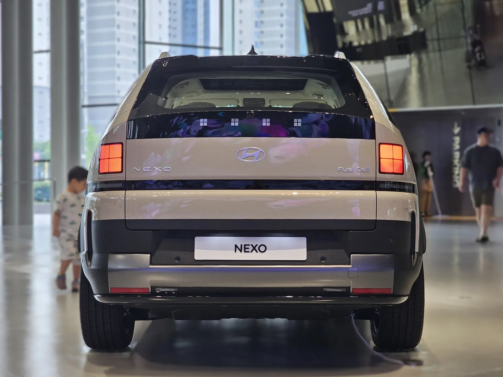
▲ 실내 전시 공간의 넥쏘 후면. 가운데 NEXO 레터링과 양쪽 세로형 리어램프, 하단의 어두운 범퍼가 보인다. 파일 정보상 프레스티지 고요 카퍼 펄로 분류돼 있으나 조명 때문에 색은 다르게 보인다 ⓒ Damian B Oh, Wikimedia Commons (CC BY-SA 4.0)
제원은 현대차 소개 페이지의 표기를 따른다. 1회 충전 주행 가능 거리는 720km(18인치 타이어, 익스클루시브 트림 기준)이고 근거는 복합 신고 연비 107.6km/kg에 수소탱크 용량 6.69kg을 곱한 값이다. 모터 최고 출력은 150kW, 최대 토크는 350Nm이며, 완충(SOF 95% 이상) 충전 시간은 5분 안팎으로 소개하되 충전소 상태와 계절에 따라 달라진다는 주석이 붙는다. 통합누리집은 같은 차를 "6.33kg·609km"로 다르게 계산한다. 이 수치(6.33kg, 609km, 복합 96.2km/kg)는 2018년 2월 신차 공개 당시 첫 세대 넥쏘의 발표 제원으로 보도된 값과 같아서, 누리집 계산이 이전 세대 제원을 쓰고 있을 가능성이 있다. 다만 누리집이 어느 제원을 쓰는지는 밝히지 않아 단정하지 않는다. 이 글은 연료비를 두 기준으로 나란히 둔다.
📍 감면 후 가격이 2027년에 오른다는 뜻은 아니다 — 다만 일몰은 있다
조세특례제한법 제109조는 수소전기차 개별소비세 감면액을 "개별소비세액 400만 원 이하면 전액, 초과하면 400만 원"으로 정하고, 이 감면이 2026년 12월 31일까지 제조장 또는 보세구역에서 반출되는 자동차에 적용된다고 규정한다(2026년 9월 18일 시행본 확인). 가격표의 520만 원 한도는 개별소비세 400만 원에 교육세를 더한 것으로 보이나, 산식은 가격표에 없어 확정하지 않는다. 2027년 1월 이후 반출분의 감면 연장 여부는 이 글을 쓴 시점에 확인하지 못했다. 조세특례제한법 바로가기
2. 트림 구성과 선택품목 — 가격표에 적힌 것만
모던은 150kW 구동 모터와 리튬 이온 배터리를 갖춘 연료전지 시스템, 12.3인치 내비게이션, 6스피커 오디오, 스마트폰 무선충전(싱글), 무선 소프트웨어 업데이트, 현대 AI 어시스턴트가 기본이다. 익스클루시브는 모던 구성에 하이패스, 실내 지문 인증 시스템, 스마트 파워 테일게이트 등을 더한다. 프레스티지는 익스클루시브 구성에 헤드업 디스플레이, 디지털 키 2, 듀얼 무선충전, 서라운드 뷰 모니터, 14스피커 B&O 사운드, 19인치 알로이 휠, 바이오 프로세스 천연가죽 시트, 2열 통풍시트 등이 들어간다고 가격표에 적혀 있다. 아래 선택품목 가격은 세제혜택 전 가격이다.
| 트림 | 선택품목 | 가격 |
|---|---|---|
| 모던 | 빌트인 캠 2 Plus·증강현실 내비게이션 / 현대 스마트센스 / 컴포트 플러스 | 600,000 / 680,000 / 1,530,000 |
| 익스클루시브 | 빌트인 캠 2 Plus·AR 내비 / 실내외 V2L / 파킹어시스트 / B&O 사운드 / 19인치 알로이 휠 | 600,000 / 850,000 / 950,000 / 1,150,000 / 250,000 |
| 프레스티지 | 빌트인 캠 2 Plus·AR 내비 / 실내외 V2L / 비전루프 / 디지털 사이드 미러 / 카메라 패키지 | 600,000 / 850,000 / 900,000 / 1,380,000 / 750,000 |
| H Genuine Accessories | 후석 스마트 엔터테인먼트 시스템(프레스티지 기재 항목) | 2,770,000 |
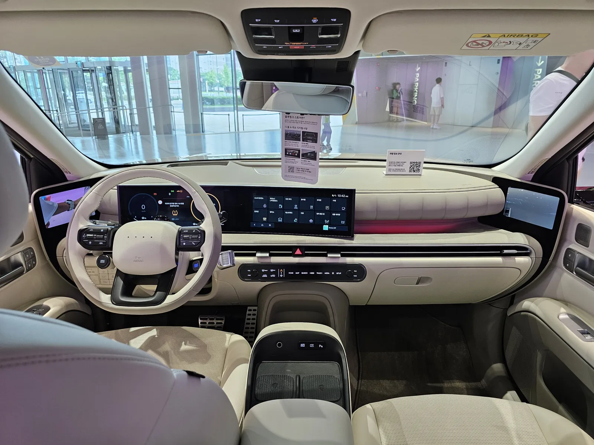
▲ 크림색 실내와 와이드 디스플레이가 보이는 넥쏘 운전석 쪽 실내. 파일 정보상 프레스티지 그레이·아이보리 투톤으로 분류돼 있다 ⓒ Damian B Oh, Wikimedia Commons (CC BY-SA 4.0)
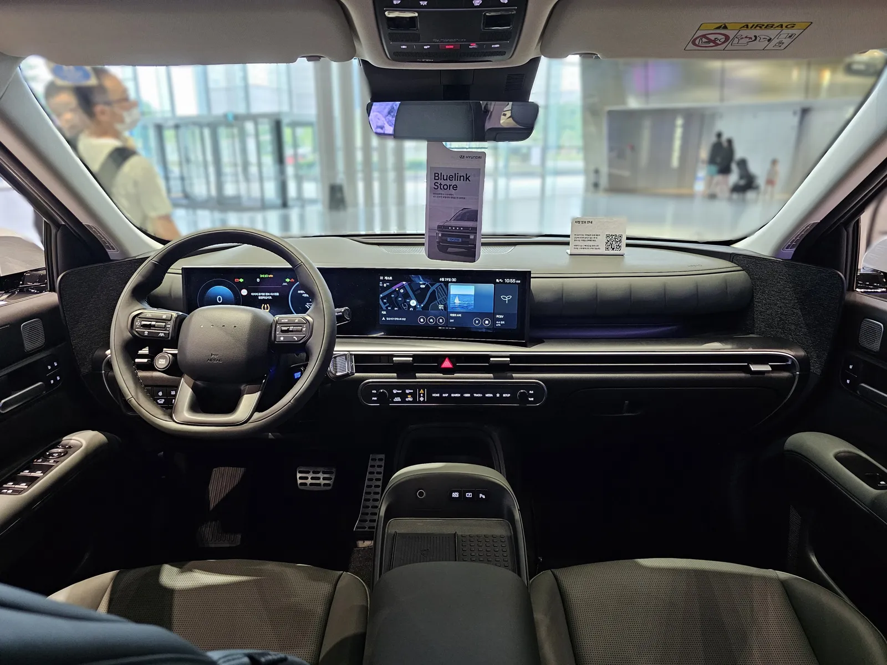
▲ 검은색 실내의 넥쏘 운전석 쪽. 파일 정보상 익스클루시브 스페셜 다크 틸 외장으로 분류되며 실내 사양은 트림 기준으로 확정하지 않는다 ⓒ Damian B Oh, Wikimedia Commons (CC BY-SA 4.0)
선택품목을 전부 더하면 값이 크게 달라진다. 모던에 컴포트 플러스(153만 원)와 현대 스마트센스(68만 원)를 넣으면 221만 원이 더해지고, 프레스티지에 비전루프·디지털 사이드 미러·카메라 패키지·V2L·빌트인 캠을 모두 넣으면 448만 원이 더해진다. 선택품목은 가격표에 "세제혜택 적용 전 가격"으로 적혀 있어, 실제 청구액에서 감면이 얼마나 반영되는지는 계약서로 확인해야 한다. 이 글의 실구매가는 선택품목을 넣지 않은 기본 트림 값이다.
3. 보조금 — 국비 2,250만 원, 지방비는 지자체마다 다르다
무공해차 통합누리집의 '지자체별 차종·모델 보조금' 목록(수소차 필터)에는 승용 수소차가 두 줄로 나온다. 한 줄은 "넥쏘"이고 다른 한 줄은 "디올뉴넥쏘"다. 서울을 예로 들면 "넥쏘" 행은 국비 2,250만 원에 지방비 0원, "디올뉴넥쏘" 행은 국비 2,250만 원에 지방비 700만 원이다. 이 글은 지방비가 붙은 "디올뉴넥쏘" 행을 2세대 신형의 보조금으로 보고 계산했다. 두 행의 이름이 현대차 가격표의 "넥쏘"와 정확히 같은지는 목록이 모델 코드를 공개하지 않아 확인하지 못했다. 목록의 전환지원금 칸은 두 행 모두 "-"다. 지자체별 차종·모델 보조금 바로가기
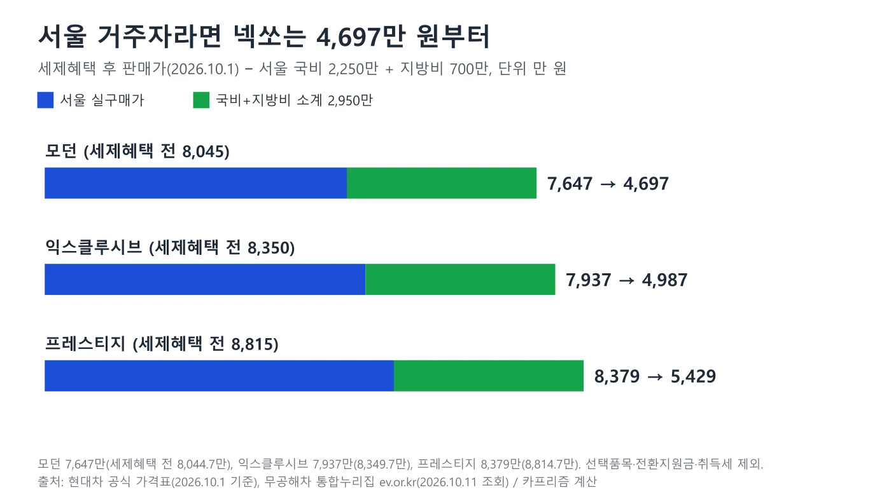
▲ 서울 기준 트림별 실구매가 도표. 국비 2,250만+지방비 700만 원(소계 2,950만 원)을 뺀 값이다 카프리즘 제작 도표
| 트림 | 세제혜택 후 판매가 | 보조금 소계(서울) | 보조금 반영 실구매가 | 취득세 본세 추정 | 합계(참고) |
|---|---|---|---|---|---|
| 모던 | 7,647.0 | 2,950 | 4,697.0 | 346.6 | 5,043.6 |
| 익스클루시브 | 7,937.0 | 2,950 | 4,987.0 | 365.1 | 5,352.1 |
| 프레스티지 | 8,379.0 | 2,950 | 5,429.0 | 393.2 | 5,822.2 |
누리집의 '보조금 지원 대상 및 신청절차' 페이지는 수소승용차를 "개인(사업자)·법인 등", 국비 2,250만 원, 지방비 최대 1,000만 원, 접수기간 2026년 2월 1일~11월 30일로 안내하고 최대 지원을 "3,250만 원(국비 2,250+지방비)"이라고 쓴다. 그런데 같은 누리집의 모델별 목록에는 지방비 1,100만~1,700만 원인 행이 있고 최대 소계는 3,950만 원이다. 안내 카드의 숫자가 목록과 어긋나는 이유는 확인하지 못했다. 업무처리지침은 지방비 보조금을 지자체가 예산사정에 따라 정하는 추가 지원으로만 규정할 뿐 상한을 두지 않으므로, 카드의 "최대 1,000만 원"은 지침상 한도가 아니라 누리집 안내용 표기로 보인다. 신청 순서는 구매계약, 지원신청서 접수, 지자체의 대상자 선정, 출고·등록(2개월 이내 원칙), 제작사의 보조금 신청(출고·등록 후 10일 이내), 지급(14일 이내 원칙)이며, 이 순서는 누리집 안내 페이지의 전기차 항목에 적힌 것인데, 누리집 법령·지침 자료실에 올라 있는 「2026년 수소전기자동차 보급사업 보조금 업무처리지침('26.1.2)」 원문의 수소전기차 절차도 같다. 지침은 출고·등록 10일 이내 제작·수입사가 보조금을 신청하고 지자체가 14일 이내 원칙으로 지급하며, 선정 후 2개월 안에 출고되지 않으면 선정이 취소되거나 대기자로 바뀐다고 적는다. 또 개인은 관할 지자체 거주 요건(3개월 이내로 설정)을 공고에 넣어야 하고, 배정 물량의 10% 이상은 취약계층·다자녀·생애최초 등 우선순위 물량으로 따로 집행해야 한다. 수소전기차 업무처리지침 바로가기 보조금 지원 대상 및 신청절차 바로가기
📍 전기차의 가격구간 계수는 수소 승용차에 없다
전기승용차 보조금에는 기본가격 5,300만 원 미만 100%, 5,300만~8,500만 원 미만 50%, 8,500만 원 이상 0%라는 가격계수가 있다(2026년 전기차 업무처리지침, 레이 EV 기사 등에서 확인한 값). 반면 수소전기차 지침 4-1항은 수소승용차 국고보조금을 "대당 22,500천원, 정액보조"로 적고, 차종별 표에 가격구간이나 트림 구분이 없다. 따라서 넥쏘 프레스티지(세제혜택 전 8,814.7만 원, 후 8,379만 원)도 지침상 국비 2,250만 원을 그대로 받는 것으로 읽힌다. 지침은 또 지방비 보조금을 지자체가 예산사정에 따라 추가로 지원하되 "차종별 국비 보조금 수준에 비례하여 차등 산정"한다고만 적고 금액은 정하지 않는다. 다만 지침은 1월 2일자 문서이고 이후 개정 여부와 지자체 공고의 개별 조건까지 확인한 것은 아니므로, 프레스티지 계약 전에는 지자체 공고를 한 번 더 보는 편이 안전하다. 수소전기차 업무처리지침 바로가기 지자체 문의처 및 보조금 지급여부 확인
4. 지방비가 갈리면 — 같은 모던이 3,697만 원에서 5,397만 원까지
모던 7,647만 원에서 국비 2,250만 원과 지자체 지방비를 뺀 값을 지자체 사례별로 정리했다. 가장 흔한 지방비는 1,000만 원이다. 조회된 133개 지자체 중 경기 26곳·충남 13곳·경북 11곳과 대구·인천·대전·세종 등 54곳이 1,000만 원이고, 1,200만 원이 30곳, 1,250만 원이 15곳이다. 서울은 700만 원으로 대도시 중 가장 낮고, 광주는 850만 원, 부산은 1,100만 원, 울산은 1,150만 원이다. 가장 큰 곳은 전남 보성군과 제주의 1,700만 원이다.
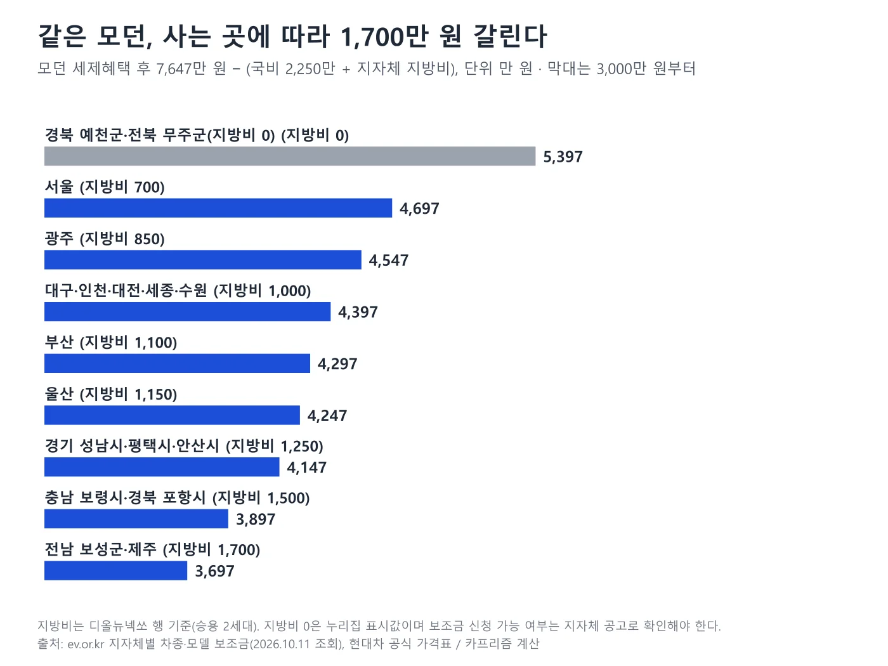
▲ 지방비 사례별 모던 실구매가 도표. 지방비 0은 누리집 표시값이다 카프리즘 제작 도표
| 지자체 사례 | 지방비 | 모던 | 익스클루시브 | 프레스티지 |
|---|---|---|---|---|
| 경북 예천군·전북 무주군 | 0 | 5,397.0 | 5,687.0 | 6,129.0 |
| 서울 | 700 | 4,697.0 | 4,987.0 | 5,429.0 |
| 광주 | 850 | 4,547.0 | 4,837.0 | 5,279.0 |
| 수원·대구·인천·대전·세종 | 1,000 | 4,397.0 | 4,687.0 | 5,129.0 |
| 부산 | 1,100 | 4,297.0 | 4,587.0 | 5,029.0 |
| 울산 | 1,150 | 4,247.0 | 4,537.0 | 4,979.0 |
| 성남·평택·안산 | 1,250 | 4,147.0 | 4,437.0 | 4,879.0 |
| 충남 보령시·경북 포항시 | 1,500 | 3,897.0 | 4,187.0 | 4,629.0 |
| 전남 보성군·제주 | 1,700 | 3,697.0 | 3,987.0 | 4,429.0 |
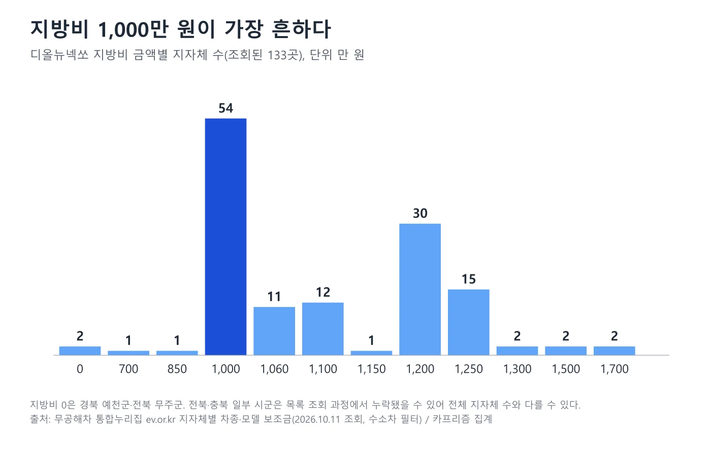
▲ 지방비 금액별 지자체 수. 1,000만 원이 54곳으로 가장 많다 카프리즘 제작 도표
이 집계는 누리집 목록에 수소 승용 행이 표시된 지자체만 센 것이다. 목록 조회 과정에서 충북·전북 일부 시군이 빠졌을 수 있고, 경북·경남처럼 수소 행이 있는 시군이 일부뿐인 시도도 있다. 지방비 0으로 표시된 경북 예천군과 전북 무주군이 실제로 보조금을 신청할 수 없다는 뜻인지, 단지 지방비 편성이 없다는 뜻인지는 목록으로 알 수 없어 확인하지 못했다. 또한 지방비는 관할 지자체 거주 등 자격 조건이 붙을 수 있다고 누리집 안내가 밝히고 있어, 다른 지자체에 주소를 두고 사는 방식으로 이 값을 받을 수는 없다.
체크포인트: 계약 전에 거주 지자체에서 확인할 것
- 지방비 금액: 목록은 2026년 10월 11일 조회값이다. 지자체 추경과 소진 상황에 따라 달라질 수 있다
- 접수 마감 여부: 목록 현황 페이지의 '신청 마감' 표시와 남은 대수를 지자체 공고와 함께 본다
- "넥쏘"와 "디올뉴넥쏘" 행: 계약하는 차가 신형인지 확인해 해당 행의 금액을 적용받는지 제작사 영업소에 묻는다
- 전환지원금: 목록의 수소차 행은 "-"다. 수소전기차 업무처리지침 원문에는 전환지원금 항목이 보이지 않는다. 지자체가 따로 두는지는 확인하지 못했다
5. 올해 접수·출고 현황 — 공고 4,989대 중 4,306대가 출고됐다
통합누리집의 '지자체별 보조금 현황'(기준년도 2026년, 차종 수소차) 목록에서 승용 행을 시군구 단위로 합산했다. 같은 지자체의 본공고와 추경 행은 한 번만 셌다. 누리집은 공고대수를 "공공(조달) 구매분을 제외한 민간 구매 대수"로, 접수대수를 "신청서를 제출한 시점부터 집계한 누적 대수"로, 출고대수를 "차량이 출고되어 지원금 지급을 신청한 대수"로 정의한다. 우리가 합산한 수소 승용 값은 공고 4,989대, 접수 4,568대, 선정 4,493대, 출고 4,306대, 출고 잔여 694대다. 133개 지자체 행 가운데 29곳은 '마감' 표시가 있고, 51곳은 출고 잔여가 0이다. 17곳은 접수가 공고대수를 넘었다.
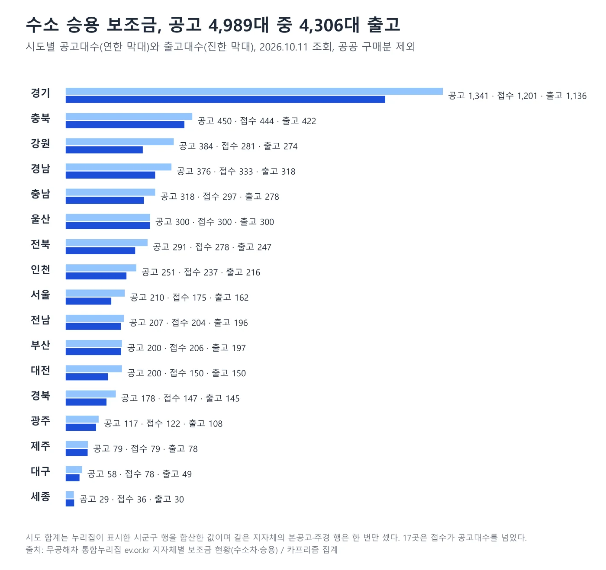
▲ 시도별 수소 승용 공고·접수·출고 대수. 연한 막대가 공고, 진한 막대가 출고다 카프리즘 제작 도표
| 지자체 | 공고 | 접수 | 출고 | 출고 잔여 | 신청 마감일 |
|---|---|---|---|---|---|
| 서울 | 210 | 175 | 162 | 48 | 2026.12.04 |
| 부산 | 200 | 206 | 197 | 3 | 2026.12.11 |
| 인천 | 251 | 237 | 216 | 35 | 2026.12.04 |
| 대전 | 200 | 150 | 150 | 50 | 2026.12.18 |
| 울산 | 300 | 300 | 300 | 0 | 2026.12.11 |
| 경기 성남시 | 151 | 95 | 90 | 61 | 2026.12.11 |
| 경기 수원시 | 156 | 133 | 122 | 34 | 2026.11.30 |
| 강원 삼척시 | 49 | 13 | 13 | 36 | 2026.12.09 |
| 경남 진주시 | 50 | 26 | 22 | 28 | 2026.12.16 |
| 전국 합계(조회된 133곳) | 4,989 | 4,568 | 4,306 | 694 | 지자체별 상이 |
해석에는 한계가 있다. 접수가 공고대수를 넘은 곳(부산 206 대 200, 광주 122 대 117, 대구 78 대 58, 세종 36 대 29, 평택 151 대 149, 화성 213 대 194 등)은 대기자를 받는지, 취소분이 생기면 채우는지 목록으로 알 수 없다. 반대로 출고 잔여가 큰 성남·대전·서울은 신청 마감일까지 기간이 남아 있지만, 출고 잔여는 선정자의 출고 대기분까지 센 값이라 신규 신청 가능 대수와 같지 않을 수 있다. 신청 가능 여부는 지자체별 공고로 확인해야 한다. 지자체별 보조금 현황 바로가기
6. 충전소와 충전비 — 평균 10,369원/kg, 운영 중 167곳
누리집 '수소차 충전요금 안내'는 2026년 평균을 10,369원/kg(기준일 2026년 10월 10일)로 보여 준다. 같은 화면은 승용 넥쏘 1회 충전을 6.33kg에 65,636원, 주행 609km로 계산하고 km당 충전비를 108원으로 제시한다. 현대차가 소개하는 탱크 6.69kg을 같은 평균가로 채우면 69,369원이다. 충전소별 안내가 248곳을 모아 보면 최저는 충남 서산시 8,600원/kg, 최고는 제주 함덕 15,000원/kg이고, 가장 흔한 가격은 9,900원/kg(88곳)이다. 누리집은 "현장 단가·사업자 프로모션·로밍 할증·멤버십에 따라 실제 결제 금액이 달라질 수 있다"고 밝힌다. 수소차 충전요금 안내 바로가기
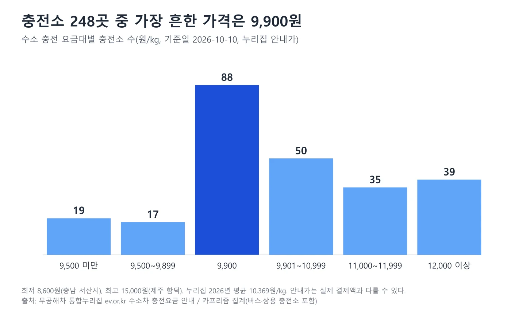
▲ 수소 충전 요금대별 충전소 수(원/kg, 2026-10-10). 9,900원이 88곳으로 가장 많다 카프리즘 제작 도표
| 수소 가격(원/kg) | km당 연료비 | 탱크 6.69kg 한 번 | 연 15,000km 연료비 | 비고 |
|---|---|---|---|---|
| 9,900 | 92.0원 | 66,231원 | 약 138만 원 | 가장 흔한 가격 |
| 10,369 | 96.4원 | 69,369원 | 약 145만 원 | 누리집 2026년 평균 |
| 12,100 | 112.5원 | 80,949원 | 약 169만 원 | 27곳이 이 가격 |
| 15,000 | 139.4원 | 100,350원 | 약 209만 원 | 조회된 최고가(제주 함덕) |
누리집의 6.33kg·609km 계산(약 96.2km/kg)을 쓰면 같은 평균가에서 km당 108원, 연 1만 5천km 연료비는 약 162만 원이다. 신고 연비를 쓰면 96원, 약 145만 원으로 17만 원 가까이 차이가 난다. 어느 쪽이 실제 도로에 가까운지는 이 글이 판단할 수 없고, 실제 수소 소모량은 주행 습관과 계절에 따라 달라진다.
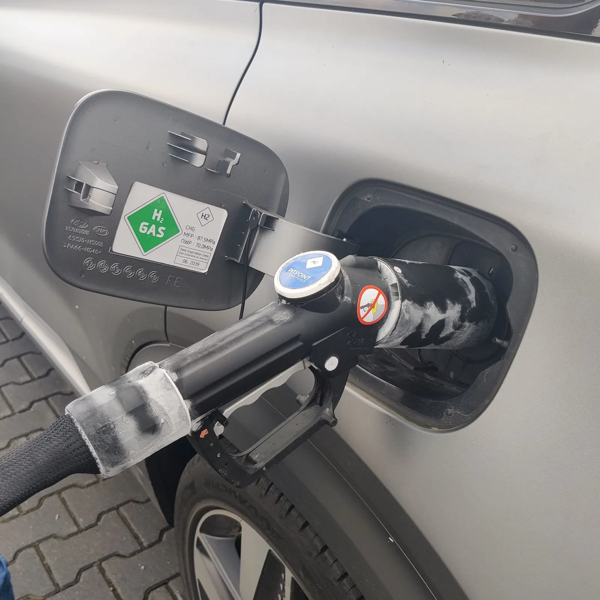
▲ 수소 충전 노즐이 차량 충전구에 연결된 모습. 노즐 주변에 서리가 낀 것이 보이고 충전구 안쪽에 H2 GAS 라벨이 있다. 촬영자는 현대 넥쏘로 설명했으나 2022년 촬영본이라 현재 판매 중인 2세대와는 다른 1세대일 수 있다 ⓒ Ogidya, Wikimedia Commons (CC BY-SA 4.0)
충전소는 누리집 '충전소 찾기(수소차)' 지도 기준으로 전체 253곳 중 운영중 167곳, 영업마감 86곳이고 영업정지는 0곳이다. 운영 중 충전소를 시도별로 보면(재조회 때는 총계 166곳, 영업마감 87곳, 전남광주 13곳으로 달라져 값은 조회 시점에 따라 1곳 안팎 변동한다) 경기 29곳, 경남 22곳, 충북 15곳, 전남광주통합특별시 14곳, 울산 12곳, 강원·전북 각 11곳, 인천·경북 각 10곳, 충남 8곳, 대전 7곳, 서울·부산 각 5곳, 대구·세종 각 2곳, 제주 1곳이다. 시도별 합은 164곳이어서 총계 167곳과 3곳 차이가 나는데, 이유는 확인하지 못했다. 누리집 지도는 광주와 전남을 '전남광주통합특별시'로 묶어 표시한다. 같은 누리집의 '수소차 소개' 백과는 "전국 145개소의 수소충전소가 운영 중"이라고 쓰지만 최종 수정일이 2026년 4월 10일이라 이번 지도 집계와 직접 비교하지 않았다. 수소차 충전소 지도 바로가기
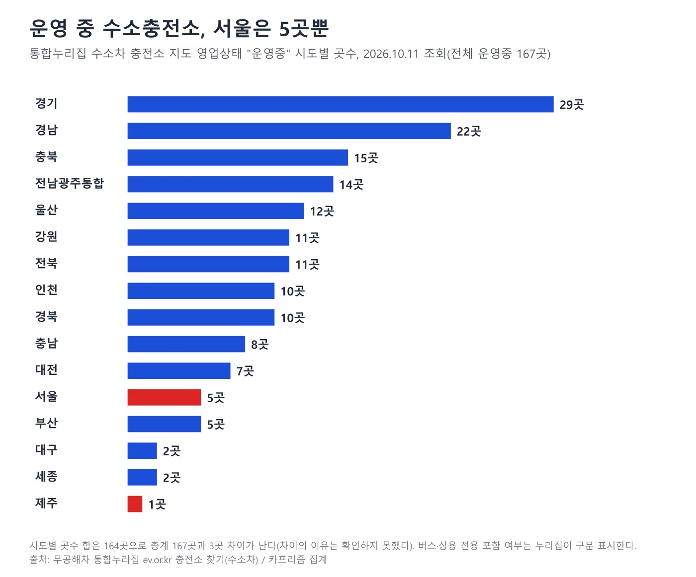
▲ 시도별 운영 중 수소충전소 수. 서울은 5곳, 제주는 1곳이다 카프리즘 제작 도표
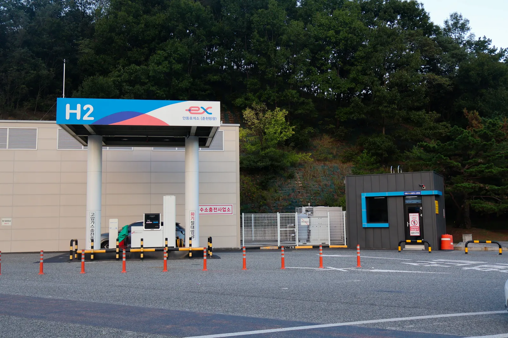
▲ 안동휴게소 수소충전소(2025년 10월 8일 촬영). 고속도로 휴게소 충전소는 장거리 이동 경로에서 충전 지점이 된다 ⓒ LandAndTree, Wikimedia Commons (CC BY-SA 4.0)
충전은 700bar 압력의 승용 규격으로 5분 안팎이 걸리고 평균 5~6kg를 채운다고 누리집이 안내한다. 지도의 충전압력 분류로 운영 중 167곳을 나누면 700bar 132곳, 800bar 35곳이다. 800bar 표기의 의미와 넥쏘의 충전 호환 여부는 확인하지 못했다. 서울에 운영 중 5곳뿐이라는 점은 수도권 이용자가 경기도 쪽 충전소를 같이 봐야 한다는 뜻이다. 현대차는 넥쏘의 루트 플래너가 목적지까지 수소 잔량으로 주행 가능한지 판단하고 충전소 운영 여부와 대기 차량 현황을 안내한다고 소개한다.
7. 취득세·개별소비세·공채 — 확인된 규정만
취득세는 지방세법이 비영업용 승용자동차에 1천분의 70(7%)을 매기고, 지방세특례제한법 제66조 제5항이 수소전기차(고시된 자동차, 화물자동차 제외)에 대해 2027년 12월 31일까지 "취득세액이 140만 원 이하이면 면제, 140만 원을 초과하면 140만 원 공제"로 정한다(2026년 6월 2일 시행본 확인). 전기자동차의 140만 원 감면(같은 조 제4항)은 2026년 12월 31일까지여서 수소전기차가 1년 더 길다. 아래 표는 세제혜택 후 판매가를 부가세 10%를 뺀 금액으로 나눠 7%를 곱한 뒤 140만 원을 뺀 단순 추정이며, 실제 고지서는 지방교육세·농어촌특별세와 과세표준 산정 방식에 따라 다르다.
| 트림 | 세제혜택 후 판매가 | 공급가액 추정 | 7% 세액 | 140만 원 공제 후 |
|---|---|---|---|---|
| 모던 | 76,470,000 | 69,518,182 | 4,866,273 | 3,466,273 |
| 익스클루시브 | 79,370,000 | 72,154,545 | 5,050,818 | 3,650,818 |
| 프레스티지 | 83,790,000 | 76,172,727 | 5,332,091 | 3,932,091 |
개별소비세는 앞서 본 조세특례제한법 제109조대로 한도 400만 원이며 2026년 12월 31일까지 반출분에 적용된다. 공채는 지자체 조례마다 다르다. 법제처 자치법규로 확인한 부산광역시 도시철도채권 조례는 전기자동차·하이브리드자동차·수소전기자동차를 등록할 때 2026년 12월 31일까지 도시철도채권 매입의무를 면제한다고 규정한다. 서울특별시 도시철도공채 조례(2026년 1월 1일 시행)는 반대로 비사업용 승용자동차 중 "다목적형 전기자동차 및 수소전기자동차"(승차정원 7명 이상 제외)를 신규등록할 때 취득세 과세표준액의 100분의 5를 매입하도록 정한다. 모던 공급가액 추정 약 6,952만 원에 적용하면 약 348만 원의 채권 매입 금액인데, 이 금액은 채권을 사는 액면이고 실제 부담은 매입 후 할인 매도할 때의 손실이므로 이 글의 실구매가에는 넣지 않았다. 그 밖의 지자체의 수소전기차 공채 매입 의무는 이번에 확인하지 못했다. 지방세특례제한법 바로가기
8. 그래서 누가 살 만한가 — 숫자가 말하는 것
숫자가 말하는 것은 세 가지다. 첫째 서울 거주자가 모던을 사면 보조금 반영 4,697만 원에 취득세 본세 추정 약 347만 원을 더한 5,044만 원이 현금 지출의 하한 근처다. 둘째 충전 요금은 소비자가 고르는 것이 아니라 가까운 충전소가 정한다. 9,900원 충전소와 12,100원 충전소의 연 15,000km 연료비 차이는 약 31만 원이다. 셋째 서울·부산처럼 운영 중 충전소가 5곳인 곳은 충전소 위치가 구매 판단의 큰 몫을 차지한다. 이 글이 말하지 않는 것은 차의 값어치다. 승차감·실연비·재판매·충전 대기는 이 글의 자료로 판단할 수 없다.
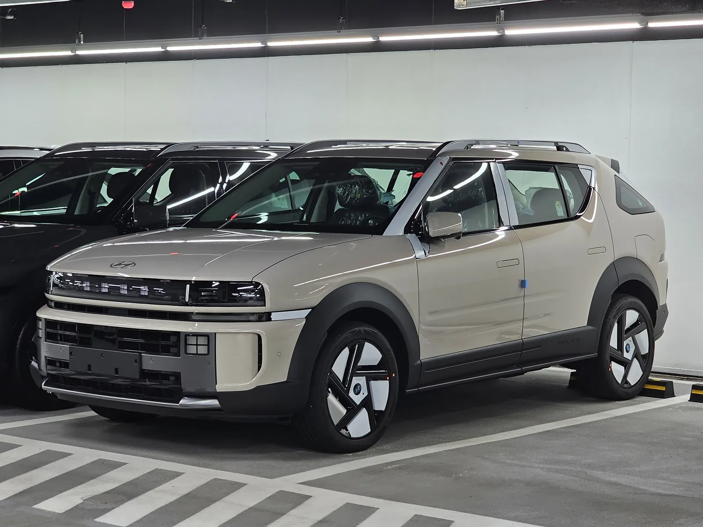
▲ 지하 주차 공간의 베이지색 넥쏘 앞 측면. 파일 정보상 프레스티지 고요 카퍼 펄이다 ⓒ Damian B Oh, Wikimedia Commons (CC BY-SA 4.0)
넥쏘는 8월 기준 출고 대기 1개월 그룹으로 현대차 8월 출고 대기 비교와 출고 대기 순위 기사에서 분류됐다. 지금 계약하면 연말 개별소비세 일몰과 2026년 보조금 접수 마감(누리집 안내 11월 30일, 지자체별 12월 마감일)이 겹치므로, 출고 시점이 해를 넘기는지 영업소에 먼저 확인하는 편이 좋다.
9. 이 글이 확인하지 못한 것
- "디올뉴넥쏘" 행과 현대차 "넥쏘"의 일치: 보조금 목록의 모델 이름은 확인했으나 모델 코드·연식 구분은 공개되지 않는다
- 수소차 보조금 업무처리지침의 이후 개정: 1월 2일자 원문(수소승용차 정액 2,250만 원, 가격계수 없음)은 확인했으나 이후 개정본과 지자체 공고의 개별 조건은 확인하지 못했다
- 안내 카드와 목록의 지방비 차이: 안내는 최대 1,000만 원, 목록은 최대 1,700만 원이다. 지침에 상한이 없다는 것까지만 확인했다
- 지방비 0 행(경북 예천·전북 무주)의 의미와 전국 모든 시군구의 목록(일부 시군 누락 가능)
- 제조사 720km·107.6km/kg와 누리집 609km·6.33kg의 계산 차이: 누리집 값이 2018년 첫 세대 발표 제원과 같다는 데까지만 확인했고, 누리집이 그 제원을 쓴다는 근거는 없다
- 서울·부산 외 지자체의 공채 매입 의무, 2027년 이후 개별소비세 감면 연장 여부
- 충전소 지도 시도별 합계(164곳)와 총계(167곳)의 차이(재조회 때는 총계 166곳, 시도별 합 163곳으로 1곳씩 달라져 실시간으로 바뀌는 값으로 보인다), 800bar 분류의 의미, 가격 안내 248곳의 영업 상태
- 실제 계약 시점 이후의 가격·보조금 변동: 조회 시점은 2026년 10월 11일이다
10. 요약
현대 넥쏘의 세제혜택 후 공식 판매가(2026.10.1)는 모던 7,647만, 익스클루시브 7,937만, 프레스티지 8,379만 원이다. 국비 2,250만 원에 서울 지방비 700만 원을 더한 2,950만 원을 빼면 서울 실구매가는 4,697만, 4,987만, 5,429만 원이다. 지방비가 0인 곳(5,397만 원)에서 1,700만 원인 곳(3,697만 원)까지 같은 모던이 1,700만 원 갈린다.
올해 수소 승용 보조금은 공고 4,989대 중 4,306대가 출고됐고 694대가 출고 잔여, 29개 지자체가 마감 표시다. 충전은 누리집 평균 10,369원/kg, 신고 연비 기준 연 15,000km 연료비 약 145만 원이며 운영 중 충전소는 167곳이다. 취득세 140만 원 감면은 2027년 말, 개별소비세 감면은 2026년 말까지다.
수소 승용차에는 전기차와 달리 가격계수가 없고 국비는 정액 2,250만 원이라는 점은 업무처리지침 원문으로 확인했다. 안내 카드와 목록의 지방비 차이, 지방비 0 행의 의미는 확인하지 못했다. 계약 전에 거주지 지자체 공고와 영업소 견적으로 확인해야 한다.